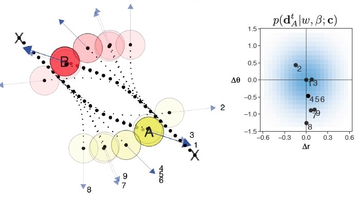

The goal of our research is to better understand the algorithms, processes and representations that underpin human intelligence. We generally approach this problem by developing computational theories of human learning representation and control. We design challenging and interactive tasks that distill elements of the challenges faced by natural cognition (see Demos) and have people and our models attempt to solve them. By comparing the behaviour of our models to that of people, we can gain insight into the mechanisms that people use to to solve problems and adapt their behaviour. As well as helping us understand human intelligence, insights from our research can inform the development of artificial systems capable of learning and behaving in more flexible and human-like ways.
At Bramley Lab are particularly interested in how people succeed at learning in the face of the world’s radical complexity. We explore how people build up complex hypotheses, ideas and causal theories in settings where there are too many (or even an infinite number of possibilities. A novelty of our research is focus on active learning, i.e. studying how people act on the world and choose what to observe in service of their learning and control goals. We investigate this in settings that involve different statistical cues from contingencies to continuous temporal and spatial dynamics. Going a step further, we are exploring model based control–i.e. situations where one balance learning a model of the environment with exploiting that model to achieve some goal.
To give you a better sense of some of the basic scientific questions we are interested in, we highlighted below some of our main lines of current research. The lab paper archive has a full list of papers with abstracts, pdfs, and links to the experiments, data and other resources wherever possible.
TODO
Bramley, N. R., Dayan, P., Griffiths, T. L. & Lagnado, D. A. (2017). Formalizing Neurath’s ship: Approximate algorithms for online causal learning. Psychological Review, Vol 124 (3), 301-338.
McCormack, T., Bramley, N. R., Frosch, C., Patrick, F. & Lagnado, D. A. (2016). Children’s Use of Interventions to Learn Causal Structure. Journal of Experimental Child Psychology. 141, 1-22.
Bramley, N. R., Dayan, P. & Lagnado, D. A. (2015). Staying afloat on Neurath’s boat: Heuristics for sequential causal learning. In Proceedings of the 37th Annual Meeting of the Cognitive Science Society (pp. 262-267). Austin, TX: Cognitive Science Society.
TODO
Bramley, N. R., Rothe, A., Tenenbaum, J. B., Xu, F. & Gureckis, T. M. (2018). Grounding compositional hypothesis generation in specific instances. In Proceedings of the 40th Annual Meeting of the Cognitive Science Society (pp. 1390-1395). Austin, TX: Cognitive Science Society.
Todo
Coenen, A., Ruggeri, A., Bramley, N. R. & Gureckis, T. M. (in revision). Testing one or multiple: How beliefs about sparsity affect causal experimentation.
Bramley, N. R., Gerstenberg, T., Tenenbaum, J. B. & Gueckis, T. M. (2018). Intuitive experimentation in the physical world. Cognitive Psychology, 195, 9-38.
Bramley, N. R., Lagnado, D. A. & Speekenbrink, M. (2015). Conservative forgetful scholars: How people learn causal structure through interventions. Journal of Experimental Psychology: Learning, Memory & Cognition, Vol 41(3), 708-731.
TODO

Bramley, N. R., Gerstenberg, T., Tenenbaum, J. B. & Gueckis, T. M. (2018). Intuitive experimentation in the physical world. Cognitive Psychology, 195, 9-38.
Bramley, N. R., Gerstenberg, T. & Tenenbaum, J. B. (2016). Natural Science: Active learning in dynamic physical microworlds. In Proceedings of the 38th Annual Meeting of the Cognitive Science Society (pp. 2567 - 2572). Austin, TX: Cognitive Science Society.
TODO
Bramley, N. R., Gerstenberg, T., Mayrhofer, R. & Lagnado, D. A. (in press). Intervening in time. In Kleinman, S. & Cowles, L. (Eds.) Time and Causality across the Sciences. Cambridge University Press.
Bramley, N. R., Gerstenberg, T., Mayrhofer, R. & Lagnado, D. A. (2018). Time in causal structure learning. Journal of Experimental Psychology: Learning, Memory & Cognition.
Davis, Z., Bramley, N. R. & Rehder, R. E. (2018). Causal structure learning with continuous variables in continuous time. In Proceedings of the 40th Annual Meeting of the Cognitive Science Society (pp. 287-292). Austin, TX: Cognitive Science Society.
Bramley, N. R., Gerstenberg, T. & Lagnado, D. A (2014). The order of things: Inferring causal structure from temporal patterns. In Proceedings of the 36th Annual Meeting of the Cognitive Science Society (pp. 236-242). Austin, TX: Cognitive Science Society.
TODO
Davis, Z., Bramley, N. R., Rehder, R. E. & Gureckis, T. M (2018). A causal model approach to dynamic control. In Proceedings of the 40th Annual Meeting of the Cognitive Science Society (pp. 281-286). Austin, TX: Cognitive Science Society.
Schulz, E., Klenske, E. D., Bramley, N. R. & Speekenbrink, M. (2017). Strategic exploration in human adaptive control. In Proceedings of the 39th Annual Meeting of the Cognitive Science Society. Austin, TX: Cognitive Science Society.